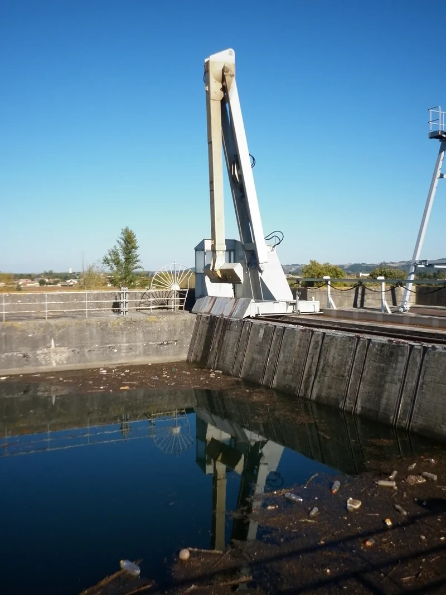
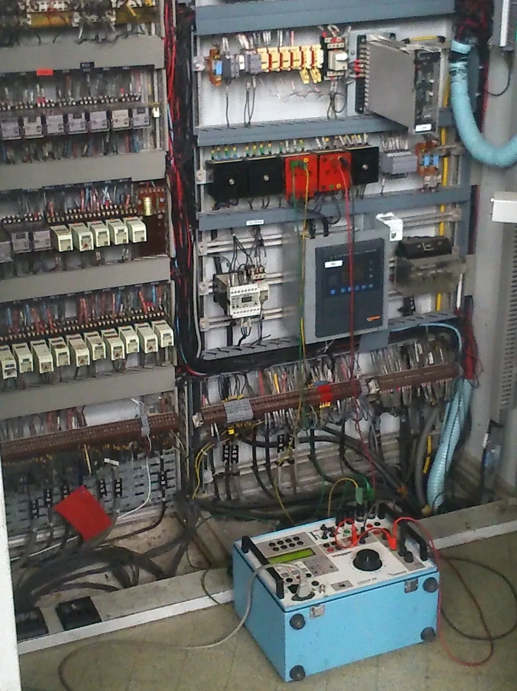
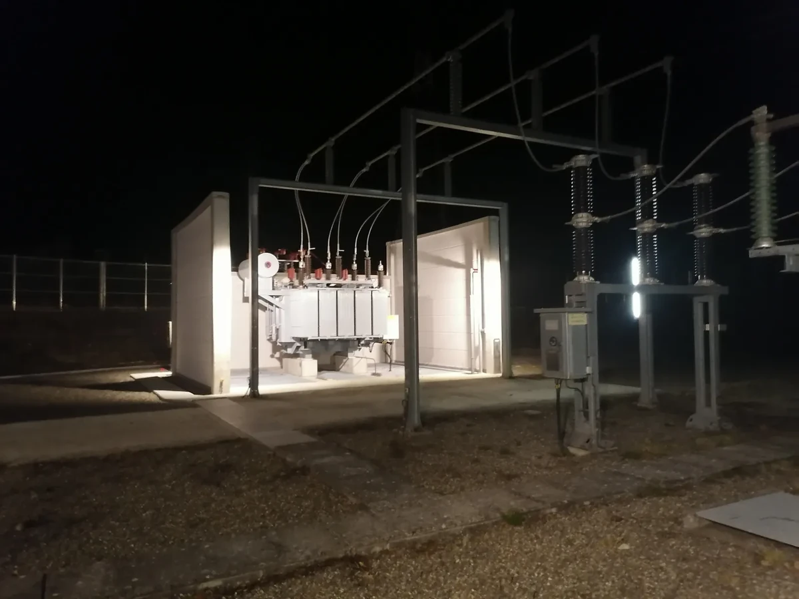
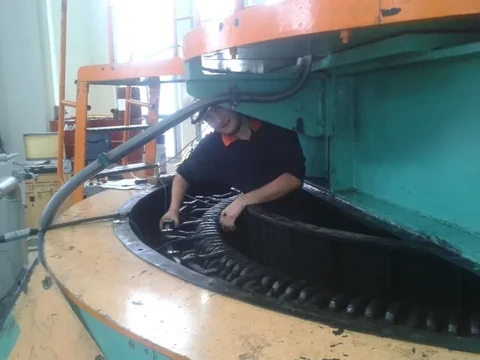
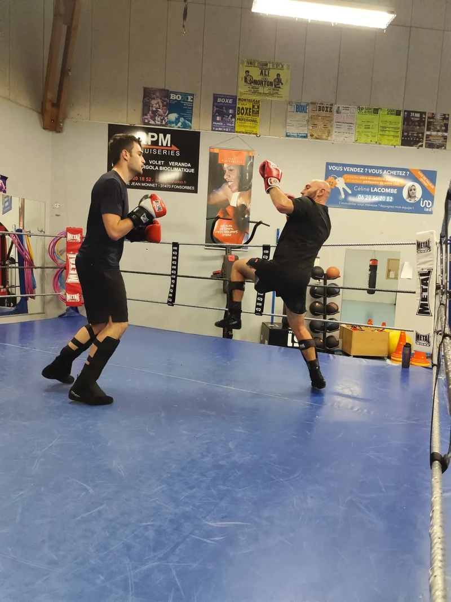
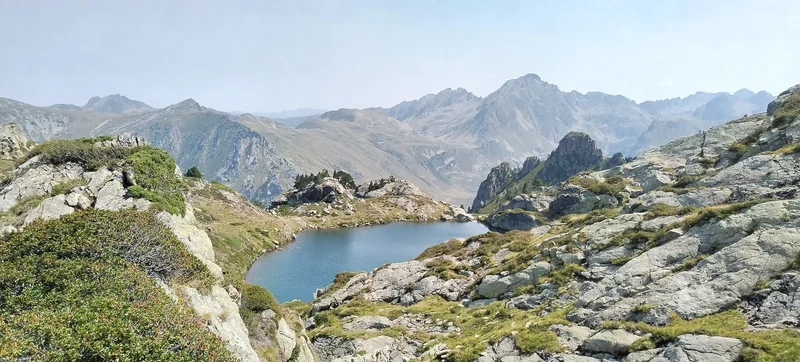

Electrical systems
Understanding installations and their operating constraints.
- Medium- and high-voltage networks
- Hydroelectric plants and substations
- Electrical diagnostics and fault analysis
- Installation safety and availability
Electrical Engineering · Protection Systems · Power
I work with electrical systems and protection while pursuing my second year of engineering studies at ENSEEIHT alongside my role at EDF.
Patrice Masson · 2nd-year Engineering Student
Energy, Electronics & Automation · ENSEEIHT

01 / Profile
My name is Patrice Masson. For more than fifteen years, I have worked in the energy sector across hydroelectric operations, electrical systems, protection and control systems.
After field operations and technical expertise, I now work in professional training at EDF. I am building on that experience through engineering studies in energy, electronics and automation at ENSEEIHT.
Understanding systems, making them reliable and sharing how they work: this is the thread running through my work and studies.
02 / Expertise
Three areas where operations, protection systems and learning come together.
Understanding installations and their operating constraints.
Testing, setting and evolving critical functions.
Making complex systems easier to understand and apply.
03 / Selected projects
Hydroelectric modernisation, continuity of service and protection-system commissioning.
Studies · Automation · Commissioning
Working within the operations team, I led the project from start to finish: requirements, studies, drawings, programming, control-cabinet build and acceptance testing.

Refurbishment · Protection · Return to service
After flooding had shut down the plant and moisture had damaged its control system, I worked with an electrician and a partner company to update the drawings and refurbish the control and protection systems.

Digital control system · MV protection · Testing
I took part in the transition to a digital control system while keeping the substation in service, with no protection trip during the changeover.
04 / Technical experience · 2013–2022
Hands-on work with electrical installations, hydroelectric plants and substations.

From 2013 to 2022, inspection and troubleshooting work involved analysing installations, checking protection systems, locating faults and making technical recommendations. The work covered hydroelectric plants and substations in southwest France.
Each intervention connected on-site observations with the electrical behaviour of the installation, while accounting for safety and operating constraints.
Checking relays and analysing faults built a practical understanding of protection functions and their role in day-to-day operations.
Observe before acting, understand how equipment interacts, adapt diagnostics to operating constraints and communicate recommendations clearly.
05 / Current work · 2022–present
My work brings together technical expertise in electrical protection and knowledge sharing.
Technical expertise
At EDF UFPI in Toulouse, I work in the field of electrical protection. My expertise draws on MV/HV systems, digital relays, SEPAM protection, settings and testing, and the relationship between protection and control systems.
Knowledge sharing and learning design
I contribute to technician training through technical explanations, practical exercises and learning scenarios. The teaching is grounded in system behaviour and helps learners build knowledge they can use in the field.
06 / Journey
A professional path shaped by working alongside installations and technical teams.
EDF Hydro
Field work, diagnostics and operating procedures. I built my first foundations in electrical safety and automation.
EDF Hydro · Enedis from 2017
Maintenance, settings, fault analysis and relay testing at hydroelectric plants and high-voltage substations.
EDF UFPI · Toulouse
Training and protection-systems expertise, developing practical exercises and coordinating training projects.
ENSEEIHT · 3EA
I am developing my knowledge of electrical engineering, electronics and automation, linking academic work with industrial experience.
Education
Learning and professional development
Three people have contributed, in different ways, to my thinking and professional development.
EDF Department Manager
He played a decisive role in my development by recognising early on how my field experience, technical expertise and longer-term perspective fit together.
His professional insight strengthened my ambition to become an engineer who combines rigour, knowledge sharing and technical leadership.
Deputy Director – HR & Professional Development Advisor, EDF
She supported me through key stages of my internal progression.
Her guidance helped me structure my development, recognise my strengths and build the professional confidence needed to contribute to ambitious projects with a strong people focus.
Doctoral Researcher, Engineer & Consultant – Capgemini Engineering
She represents, for me, a modern view of engineering: structured, adaptable and open to innovation.
Her external and demanding perspective helped me identify strengths that matter in the energy sector: adaptability, curiosity and the ability to contribute to complex projects.
07 / Professional direction
Building the next stage of my career by connecting experience with engineering methods.
Now · 2026–2028
Medium term
Longer term
My ambition is to become an engineer who can connect field understanding, analysis, technical expertise, project work and teaching, while developing the ability to guide technical decisions.
Over time, this path could also lead to consulting or expert assignments. That is a future possibility, not my current role.
08 / Personality, international outlook & interests
Concrete points of reference from my career, current work and interests.
Languages & mobility
French is my working language. I am learning English and Russian and want to keep improving my English. I would also like to add international experience to my career when professional and academic arrangements allow.
Returning to engineering studies after several years of professional practice reflects my wish to understand systems more deeply and broaden my methods.
My work has moved from operations to inspection, then to expertise and training. Explaining systems is now part of my day-to-day professional practice.
Working with electrical installations has shaped my focus on rigour, safety and cooperation across technical roles.

I have practised savate since 2007. Staying with it over time gives me a practical appreciation of consistency, precision and technical progression.

Walking and discovering new places appeal to me for the observation, encounters with unfamiliar environments and cultural openness they bring.